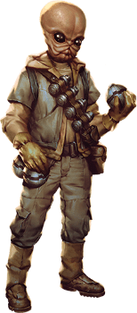

Bith

Tratti dei bith
| Aumento dei punteggi caratteristica | Il punteggio di Intelligenza aumenta di 2 e la Destrezza aumenta di 1 |
| Eta' | I bith raggiungono la maturita' intorno ai 18 anni e vivono per meno di un secolo |
| Allineamento | Tendente al lato chiaro della forza |
| Taglia | Media |
| Velocita' | 9m |
| Cura dei Dettagli | Hai vantaggio nelle prove di Intelligenza (Investigazione) effettuate entro 1.5m |
| Olfatto Acuto ed Udito Sopraffino | Hai vantaggio nelle prove di Saggezza (Percezione) che riguardano l'olfatto o l'udito |
| Musicista | Sei competente nell'utilizzo di uno strumento musicale a scelta |
| Programmatore | Ogni volta che effettui una prova di Intelligenza Tecnologia) che riguarda i computer, va effettuata come so avessi maestria nell'abilita' |
| Sensibilita' Sonica | Hai svantaggio sui tiri salvezza contro effetti che infliggerebbero danni sonici |
| Trance | Ti bastano 3 ore (invece di 6) per completare un riposo lungo. Qualora il riposo lungo venisse interrotto, per completarlo non devi cominciare da capo, ma puoi riprendere da dove si e' interrotto. |
| Linguaggi | Sai parlare, leggere e scrivere: Galattico Base, Bith ed un linguaggio bonus a scelta |